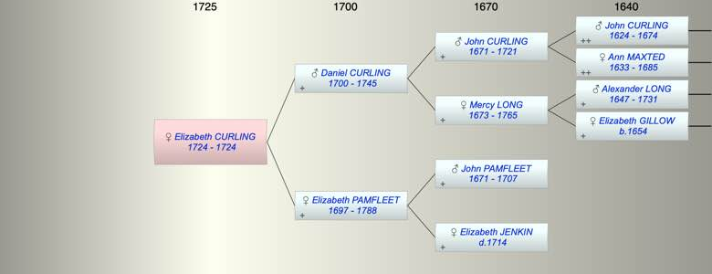

| [Index] |
| Elizabeth CURLING (1724 - 1724) |
|  |
| b. 1724 at St Laurence |
| d. 1724 at St Lawrence aged 0 |
| Parents: |
| Daniel CURLING (1700 - 1745) |
| Elizabeth PAMFLEET (1697 - 1788) |
| Siblings (5): |
| Mercy CURLING (1727 - 1727) |
| Daniel CURLING (1730 - 1818) |
| John CURLING (1732 - 1804) |
| Alexander CURLING (1739 - 1789) |
| William CURLING (1742 - 1823) |
| Events in Elizabeth CURLING (1724 - 1724)'s life | |||||
| Date | Age | Event | Place | Notes | Src |
| 1724 | Elizabeth CURLING was born | St Laurence | Note 1 | ||
| 1724 | Elizabeth CURLING died | St Lawrence | Note 2 | ||
| Note 1: bap St Laurence 12 May 1724 ex FS |
| Note 2: buried 17 May 1724 daughter of Daniel and Elizabeth ex FMP |
| Created on a Mac™ using iFamily for Mac™ on 8 Oct 2023 |